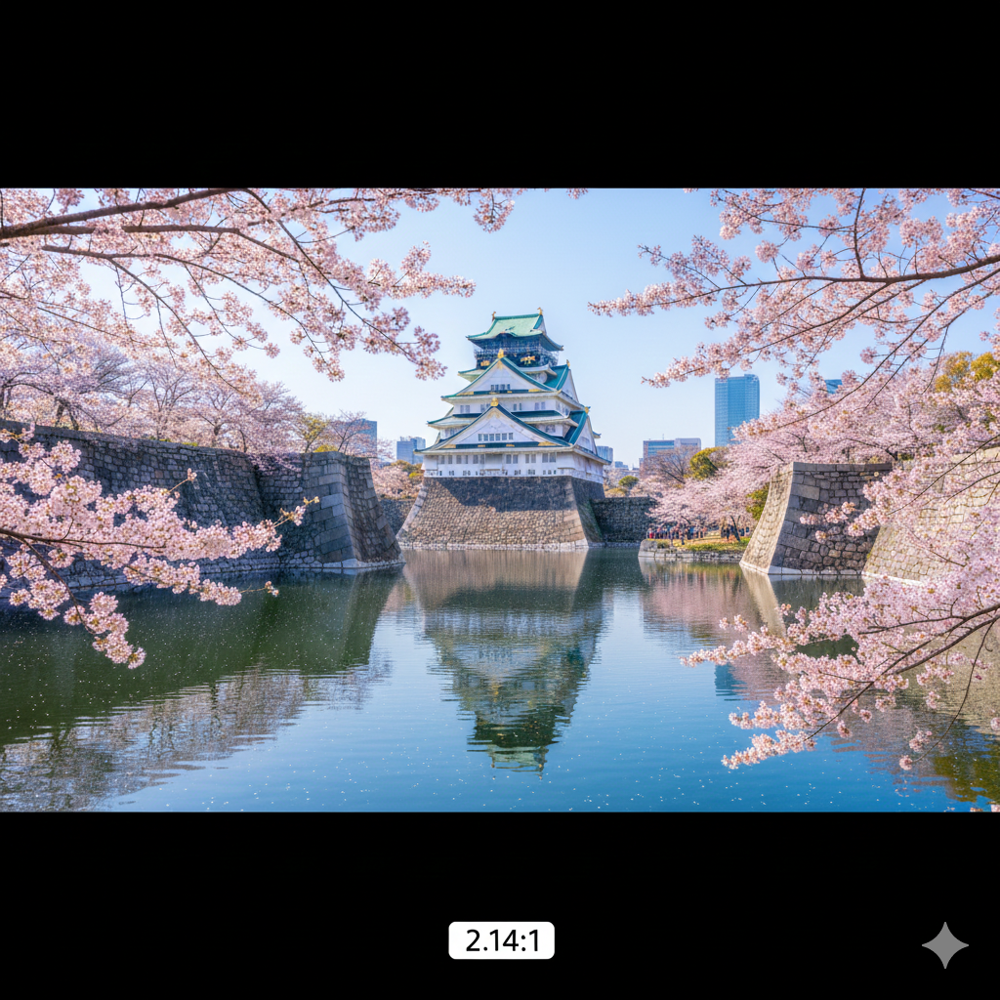
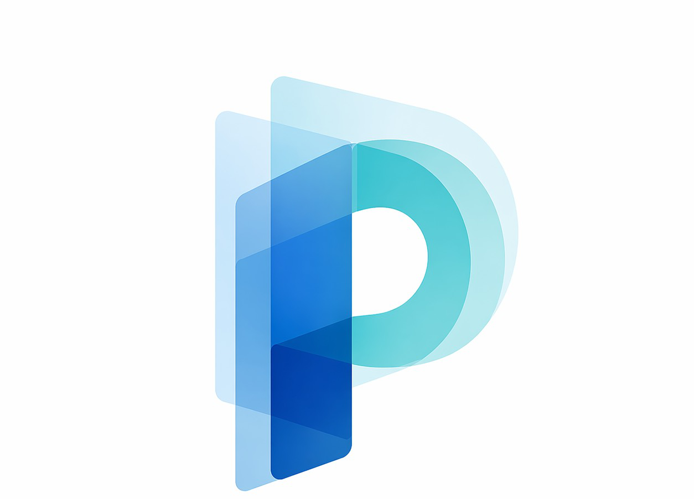

Polimiru
政治を見える化
投票前に、見るべきもの
政治家の
言葉と行動
公約・発言・実績を、出典に基づいて整理する政治情報サイト。
名前・政党・選挙区から
議員名、選挙区、キーワードで検索
政治家プロフィール
注目選挙・候補者
比べるのは、印象ではなく事実
公約と実績を
並べて確認
公約
発言
実績
一次情報ベース
根拠まで
たどれる
議会資料
発言・会議録を確認
公的データ
選挙・政策情報を整理
候補者情報
届け出・公報を参照
更新履歴
新しい情報を追跡
あなたの地域の選挙へ。
エリアを設定して、関係する候補者・選挙情報にすばやくアクセス。
政治を、もっと透明に。
Polimiruで、投票判断に必要な情報を確認。
polimiru.jp